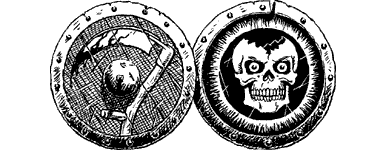

250
The troops have almost finished their grisly meal when a figure, clad in flowing grey robes and a helm of brightly polished steel, swoops down from out of the brooding sky upon the back of a Zlanbeast. He screams orders to the Gourgaz who immediately responds by cursing and slapping his tired troops into line. The grey rider berates the sorry-looking squad before finally taking to the skies once more. Stung into action by his harsh words, the Gourgaz officer leads his unit away at the double.
Curiosity prompts you to follow them, although you take care to remain hidden from view. They zigzag through a maze of back streets before arriving at the approach road to a large hall. Here a pitched battle is taking place between two warring factions: one side wearing uniforms of orange cloth, the other clad in blue-green.
{kind=link}

For several minutes you observe the carnage taking place as the two groups fight for control of the hall. The fighting soon escalates to the surrounding ruins and wisely you decide it best to leave this area before you, too, become caught up in the fighting.
You notice a road away to your right which leads directly to the citadel. It is virtually deserted and seems to offer the best escape route from the battle zone. However, you have covered barely a hundred yards when you are suddenly confronted by a unit of Drakkarim Death Knights, reinforcements freshly arrived from the citadel itself.
Quickly you dive into a side street and run as fast as you can, but the Death Knights have seen you and, despite their heavy armour, they give chase determinedly.
The street soon ends at a junction where two roads branch away, one to the left, the other to the right.
If you have the Discipline of Grand Huntmastery, turn to 107.
If you do not possess this skill or do not wish to use it, you can take either the left road by turning to 85.
Or the right road by turning to 266.